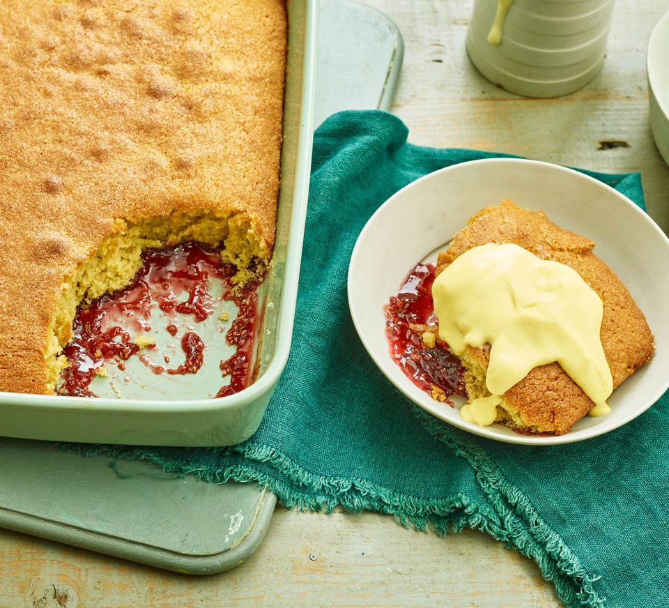

Easy desert recipe done with few ingredients
Ingredients
- butter
- Brown sugar
- flour
- eggs
- vanilla extract
- Strawberry or raspberry jam
- custard, cream or icecream to serve
Steps
- Heat the oven to 200C/180C fan/gas 6. Butter a 25cm square or 20 x 30cm rectangular cake tin or baking dish.
- Beat the butter, sugar, flour, eggs and vanilla extract together until smooth. Spread the jam over the base of the tin, and dollop over the cake batter.
- Spread over evenly. Bake for 20-25 mins until the sponge is light golden and risen, and a skewer inserted into the middle comes back clean.
- Serve warm with custard, cream or ice cream.